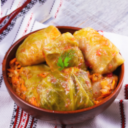

SARMA

For this satisfying sarma dish, cabbage leaves are stuffed with a seasoned mixture of rice, ground beef, pork, and ham. They are then laid on a bed of sauerkraut and simmered to completion. This is the best stuffed cabbage recipe I've ever tried.
Ingredients:
- 1 large head cabbage, frozen for 3 days, then thawed overnight in the refrigerator
- 1 pound lean ground beef
- 1/2 pound ground pork
- 1/2 pound ground ham
- 1 cup uncooked long-grain white rice
- 1 onion, finely chopped
- 1 egg
- 1 teaspoon salt
- 1 teaspoon coarse ground black pepper
- 1/2 teaspoon garlic powder
- 1 pound sauerkraut
- 1 cup tomato juice
Steps:
- Remove the leaves from the head of cabbage.
- Mix beef, pork, ham, uncooked rice, onion, egg, salt, pepper, and garlic powder together in a bowl until well combined. Form mixture into oblong balls, using 1/2 cup of the mixture at a time. Wrap a cabbage leaf around each ball.
- Spread sauerkraut in the bottom of a large pot. Layer cabbage rolls on top, placing them seam-side down. Pour tomato juice over rolls, then add enough water to cover and bring to a boil. Reduce the heat to low and simmer for about 3 hours, adding more water as necessary.